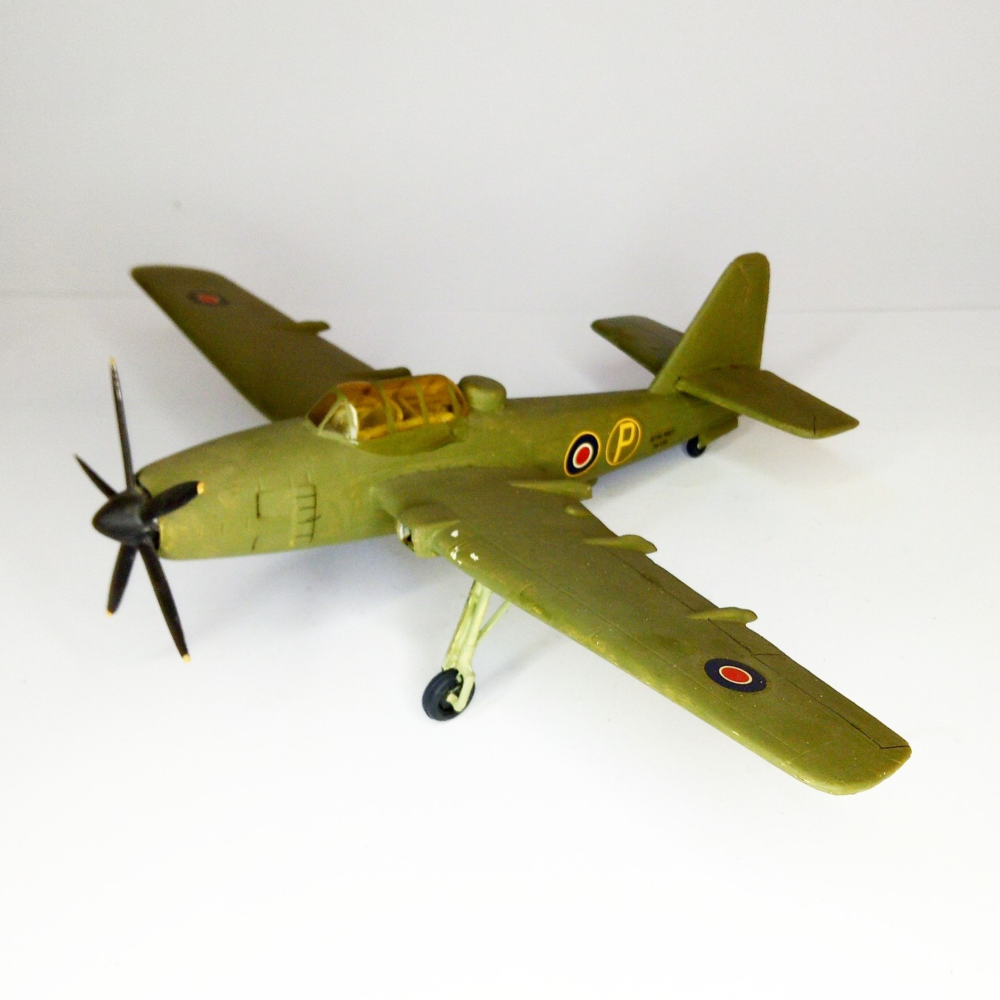

Aerei · scale model archive
Fairey Spearfish
Fairey Spearfish — Kit: Contrail vac-form, Scale: 1/72. impressive size for a single engine aircraft, kit found in the UK #1/72 #Contrail

Photo gallery
English description
impressive size for a single engine aircraft, kit found in the UK
#1/72 #Contrail
Descrizione italiana
notevole dimensioni per una single motore aereo, kit trovato nel UK.